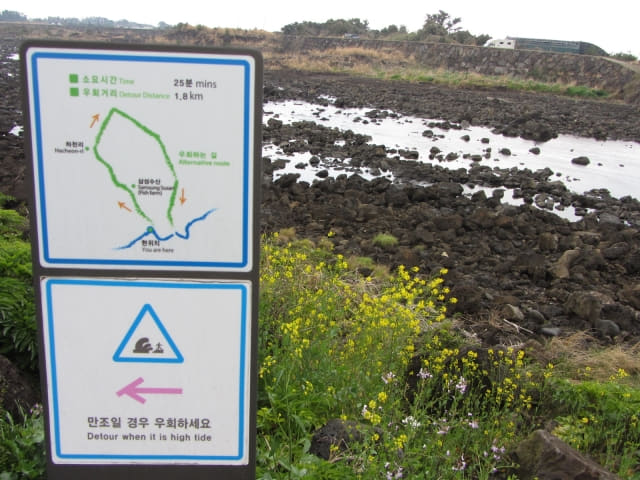
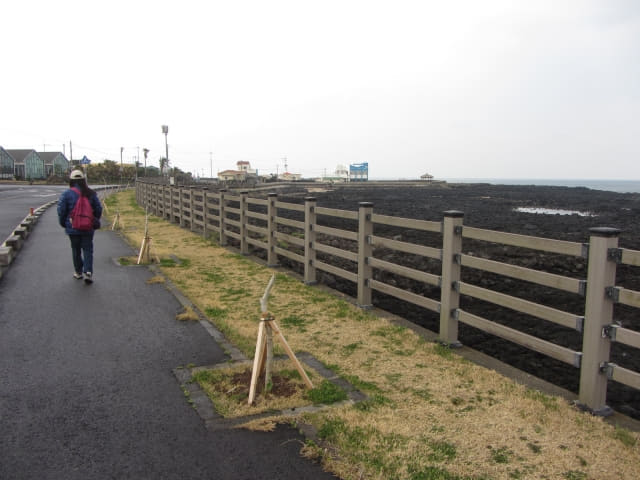

在川尾川出海口漁港看著漫天飛翔的海鷗, 流連忘返。太美了, 真想逗留多一會, 無奈還要繼續行程。已經是下午三時半了, 要盡快步行往新川里壁畫村。
川尾川 (천미천)
離開川尾川出海口漁港, 繼續沿偶來3號小路的標示走。

跨過心目中以為的「橋樑」也不知
沿步道穿過河水滔滔的川尾川。步道比河面只高一些, 當河水上升少許便要繞道走了。
唉! 當時一直以跨過橋樑為抵達新川里壁畫村前的最重要路標, 竟然不知道這步道便是我們所心目中一直以為的「橋樑」! 回家後重新翻看這段路線的所有照片才知道!
跨過川尾川, 繼續沿偶來3號小路向前走。
穿過叢林間小徑, 接著又沿馬路旁的步道走。
隱約看到前面遠處岬角上的涼亭及綠色燈塔。
好像水銀般的積水。
又是另一條通往海中的神秘步道。
經過東海水產。

濟州海香味賓館 (제주바다향기게스트하우스)
經過濟州海香味賓館, 設計很獨特的旅館。
繼續往前走, 迎面是一個「Y」字型的分叉路口, 因打算往右邊的涼亭看看, 便轉右循那方向走去。
突然間, 一道光線從厚厚烏雲中的裂口破繭而出, 直瀉而下, 煞是好看。
新川里壁畫村
來到岬角上的涼亭。路旁有一間房子, 外牆上的壁畫很可愛呢!
唉! 其實已經來到新川里壁畫村海濱邊陲的地方, 竟然懵然不知! 只怪當時一直想: 還沒有跨過河道上橋樑, 還未到新川里壁畫村的!

剛好有一位裝備充足的遠足男子迎面走來, 也是在偶來3號小路唯一碰到的途人, 便叫他幫我們拍合照, 順便問他往新川里壁畫村 (신천리벽화마을)還要走多遠, 但他表示不知道。
接著在防波堤上的涼亭欣賞風景, 順便休息一會。一望無際的大海, 十分壯麗。
前面有兩道長長環抱的防波堤, 又是另一個漁港。
走下防波堤, 繼續沿海濱向前走。
又經過一些很有趣的壁畫。
經過一個洗手間, 當然要鬆一鬆, 然後才繼續上路。